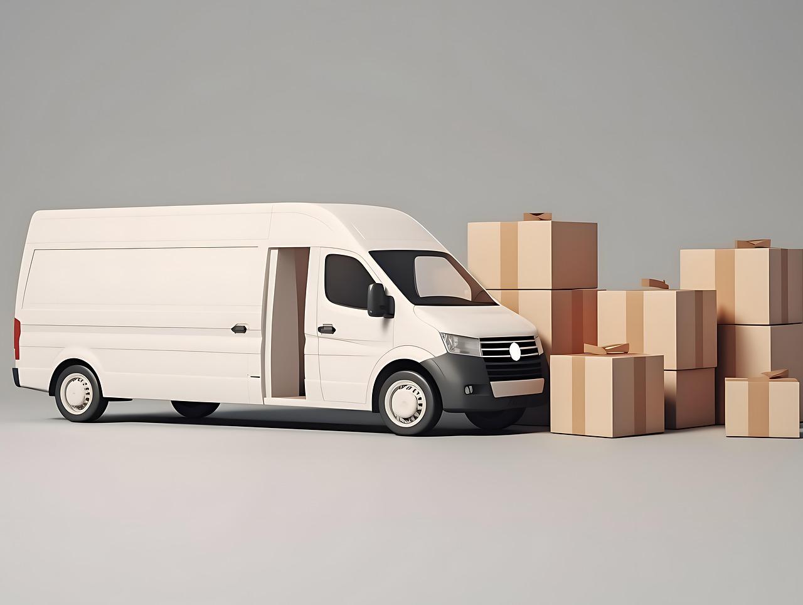

Portes y Traslados Profesionales
En Vaciados y Mudanzas Miranda ofrecemos servicios de portes y traslados para hogares, oficinas y locales en Miranda de Ebro. Transportamos tus muebles, enseres y objetos delicados con total seguridad y cuidado.
Nuestro equipo garantiza puntualidad y eficiencia en cada traslado, adaptándose a tus necesidades y asegurando la máxima satisfacción en cada servicio.
Nuestros Servicios de Portes
- Traslados de muebles y enseres
- Portes para oficinas y locales comerciales
- Distribución de materiales y productos
- Transporte seguro de objetos delicados
- Retirada y entrega a domicilio

¿Por Qué Elegirnos?
Contamos con un equipo profesional, vehículos equipados y experiencia en todo tipo de portes y traslados. Nos adaptamos a tus necesidades y garantizamos un servicio rápido, seguro y confiable. Servicio 24 horas los 7 días de la semana.